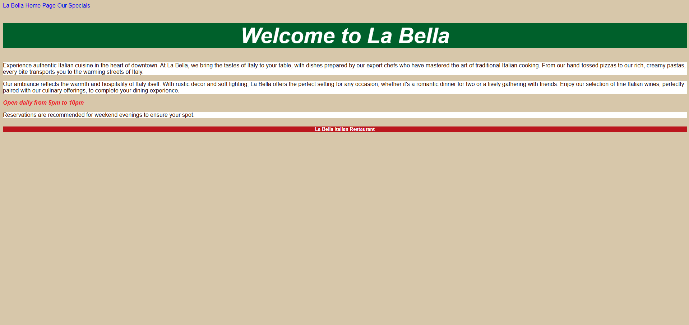
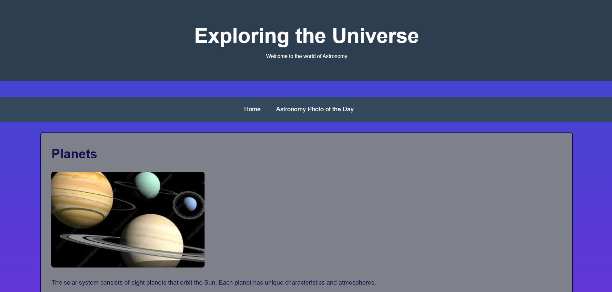
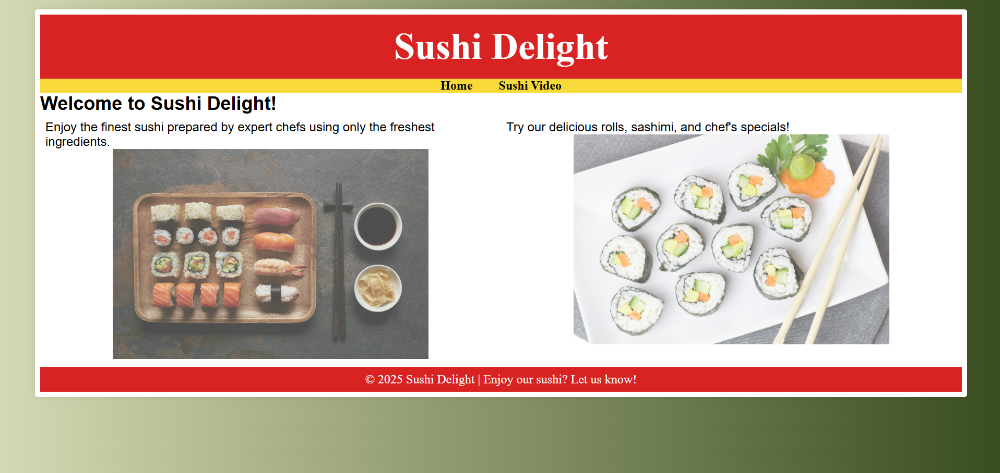

Week 4: Basic Web Structure

This assignment demonstrates the use of semantic HTML structure and external style sheets.
Here are a few of my published class projects showcasing my growing understanding of HTML and CSS.

This assignment demonstrates the use of semantic HTML structure and external style sheets.

This project introduced design elements such as sections, borders, gradients, and images, as well as flexible layouts using percentages and rems.

A fun sushi-themed page that uses images, navigation, and text hierarchy to create an appealing experience.